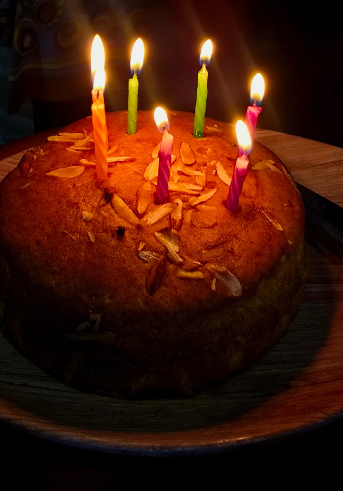

Recipe For Classic Vanilla Cake

How to Make a Vanilla Cake
Baking a fluffy, moist vanilla cake is easier than it seems. Below is a detailed ingredient list and step-by-step instructions to make the perfect cake at home.
Ingredients:
You will need the following ingredients for a delicious vanilla cake:
- Butter: 1 cup (softened) to create a rich and moist cake texture.
- Sugar: One 1/2 cups granulated sugar to sweeten the cake evenly.
- Eggs: 3 large eggs, for binding and structure.
- Vanilla Extract: 2 teaspoons to enhance the flavor.
- Flour: 1 cup all-purpose flour for the cake base.
- Baking Powder: 1 teaspoon to help the cake fluffy.
- Milk: 1 cup, to create a soft and tender crumb.
Procedure:
Follow these steps to bake your vanilla cake:
- Preheat your oven to 350°F (175°C) and grease your cake pans.
- Cream the butter and sugar until light and fluffy.
- Beat in the eggs one at a time, then add the vanilla extract.
- Mix flour and baking powder in a separate bowl.
- Alternate adding dry ingredients and milk to the butter mixture, mixing until smooth.
- Pour the batter into prepared cake pans and smooth the tops.
- Bake for 30-35 minutes or until a toothpick comes out clean.
- Allow the cakes to cool completely before frosting.
Baking Time:
Bake in a preheated oven at 350°F (175°C) for 30-35 minutes. The edges should be golden, and a toothpick inserted into the center should come out clean.
Tips for Perfect Cake
- Make sure all ingredients are at room temperature for a smooth batter.
- Do not overmix the batter; it can make the cake dense.
- Check cake with a toothpick a few minutes before time is up to avoid overbaking.
Storage
Store the cooled cake in an airtight container at room temperature for up to 3 days. For longer storage, wrap in foil and refrigerate for up to a week.
Can You Freeze Vanilla Cake?
Yes! You can freeze both baked cake layers and unbaked batter:
- To freeze baked cake: Wrap layers in plastic wrap and foil, then freeze for up to 2 months.
- To freeze batter: Pour batter into greased pans, cover, and freeze for up to 1 month. Bake directly from frozen, adding 5-10 minutes to the baking time.